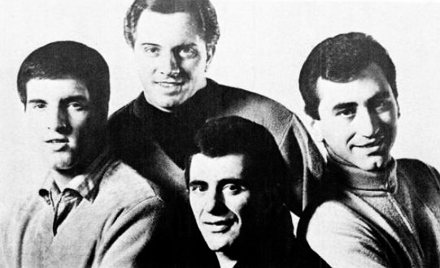

The Four Seasons turned Newark doo-wop into four US number ones between 1962 and 1964.
Frankie Valli's falsetto, Bob Gaudio's songs and Bob Crewe's productions carried "Sherry," "Big Girls Don't Cry," "Walk Like a Man" and "Rag Doll" to the top of the Hot 100.
The group formed in 1960 and kept charting through the rest of the decade, even as the British Invasion changed the radio.

Table of Contents
- From the Four Lovers to Newark's Four Seasons
- Three Number Ones at Vee-Jay
- The Beatles, Vee-Jay and the Move to Philips
- Rag Doll and the Later 1960s Hits
- Lineup Changes and a Concept Album
- Honors and Legacy
- FAQ
From the Four Lovers to The Four Seasons
The group formed in 1960 in Newark, New Jersey.
It grew out of earlier acts, including the Four Lovers, who performed from 1956 to 1960.
Frankie Valli, born Francesco Stephen Castelluccio on May 3, 1934, sang lead.
Tommy DeVito played guitar, Nick Massi played bass, and Bob Gaudio played keyboards and wrote the songs.
How They Got the Name
In 1960 the band was working under several aliases.
Its members failed an audition at a bowling alley lounge in Union Township, New Jersey.
The lounge was called the Four Seasons.
The band took the name for itself.
Three Number Ones at Vee-Jay
Early hits came out on Vee-Jay Records.
Producer Bob Crewe ran most of the sessions, and Gaudio wrote most of the songs.
The Rock and Roll Hall of Fame points to Valli's three-octave range and falsetto, set against tight doo-wop harmonies.
Our Pop and Brill Building guide shows where that polished sound fit among the decade's hit factories.
Sherry
Gaudio wrote "Sherry" in about 15 minutes.
His working title was "Jackie Baby," a nod to Jacqueline Kennedy, and it became "Terri Baby" in the studio before it settled on "Sherry."
Vee-Jay released it in August 1962.
It reached number one on the Hot 100 on September 15, 1962, and stayed there for five weeks.
It also topped the R&B chart for one week and reached number eight in the UK.
Big Girls Don't Cry
The follow-up came out in October 1962.
It reached number one on November 17, 1962, and also held the top spot for five weeks.
The 1962 year guide shows both singles in the context of that year's charts.
Walk Like a Man
"Walk Like a Man" followed in January 1963.
It reached number one on March 2, 1963, for three weeks.
"Candy Girl" then reached number three later in 1963.
The 1963 year guide covers the year they became a fixture on the radio.
The Beatles, Vee-Jay and the Move to Philips
Vee-Jay also held US rights to early recordings by The Beatles.
A long legal fight over those rights followed, and they reverted to Capitol Records in October 1964.
Vee-Jay was declared bankrupt in 1966.
In January 1964 the group left Vee-Jay for Philips Records, then a division of Mercury Records.
Its first big Philips single, "Dawn (Go Away)," peaked at number three.
On the March 21, 1964 Hot 100, three Beatles singles held it out of the top spot.
The 1964 year guide shows how crowded the top of the chart was that spring.
Rag Doll and the Later 1960s Hits
Crewe and Gaudio wrote "Rag Doll."
Philips released it in June 1964.
It reached number one on July 18, 1964, for two weeks, their fourth US number one.
"Let's Hang On!" followed in 1965 and reached number three.
The 1966 and 1967 Singles
The hits kept coming into the next two years.
The 1966 year guide and the 1967 year guide place them among the decade's pop and psychedelic changes.
The table lists their main Hot 100 peaks.
Tap Play to hear a song, or a heading to sort.
| Play | |||
|---|---|---|---|
| "Sherry" | 1962 | No. 1 | |
| "Big Girls Don't Cry" | 1962 | No. 1 | |
| "Walk Like a Man" | 1963 | No. 1 | |
| "Candy Girl" | 1963 | No. 3 | |
| "Dawn (Go Away)" | 1964 | No. 3 | |
| "Rag Doll" | 1964 | No. 1 | |
| "Let's Hang On!" | 1965 | No. 3 | |
| "Working My Way Back to You" | 1966 | No. 9 | |
| "I've Got You Under My Skin" | 1966 | No. 9 | |
| "Opus 17 (Don't You Worry 'bout Me)" | 1966 | No. 13 | |
| "C'mon Marianne" | 1967 | No. 9 | |
| "Beggin'" | 1967 | No. 16 | |
| "Watch the Flowers Grow" | 1967 | No. 30 |
Lineup Changes and a Concept Album
Massi left in September 1965, the month "Let's Hang On!" came out.
Arranger Charles Calello, a former Four Lovers member, filled in for a short time.
A few months later Joe Long took over on bass and stayed until 1975.
The group's last Philips album of the decade was The Genuine Imitation Life Gazette in 1969.
It was a concept album, and it was a commercial failure by their usual standards.
The band left Philips afterward, and its last Philips single was "Patch of Blue" in 1970.
DeVito left in 1970, and Gaudio stopped touring in 1972 to focus on writing, producing and recording.
Honors and Legacy
Recognition came in the decades after the hits:
- 1990: Rock and Roll Hall of Fame, for the original lineup
- 1999: Vocal Group Hall of Fame
- 2017: New Jersey Hall of Fame
- 2024: Hollywood Walk of Fame star, shared with Valli
Valli also scored solo number ones with "My Eyes Adored You" in 1974 and "Grease" in 1978.
The stage musical Jersey Boys opened on Broadway in 2005 and told the group's story.
It won four Tony Awards in 2006, including Best Musical, and Clint Eastwood directed a film version in 2014.
FAQ
Who were the original members of The Four Seasons?
Frankie Valli sang lead, Bob Gaudio played keyboards and wrote songs, Tommy DeVito played guitar, and Nick Massi played bass.
The Rock and Roll Hall of Fame inducted that original lineup in 1990.
How did the band get its name?
In 1960 the group failed an audition at a bowling alley lounge in Union Township, New Jersey.
The lounge's name became the band's name.
What were the group's number one hits?
Four singles reached number one on the Billboard Hot 100 in the 1960s.
"Sherry" and "Big Girls Don't Cry" did it in 1962, "Walk Like a Man" in 1963, and "Rag Doll" in 1964.
Did the Beatles keep the group from number one?
On the March 21, 1964 Hot 100, three Beatles singles held "Dawn (Go Away)" out of the top spot.
The song peaked at number three.
Are The Four Seasons in the Rock and Roll Hall of Fame?
Yes.
They were inducted in 1990.
They also entered the Vocal Group Hall of Fame in 1999 and the New Jersey Hall of Fame in 2017.
Few groups made falsetto pop sound this tough and this danceable.
The full history of The Four Seasons is on Wikipedia.
Back to the 1960smusic.net homepage to explore every genre of the decade.